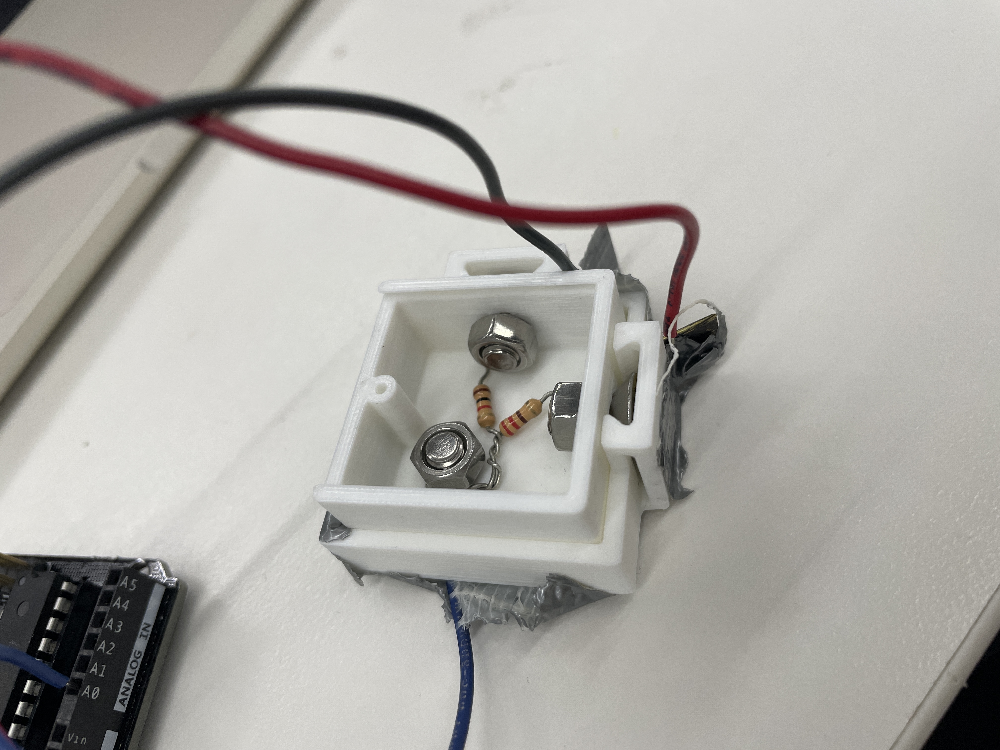
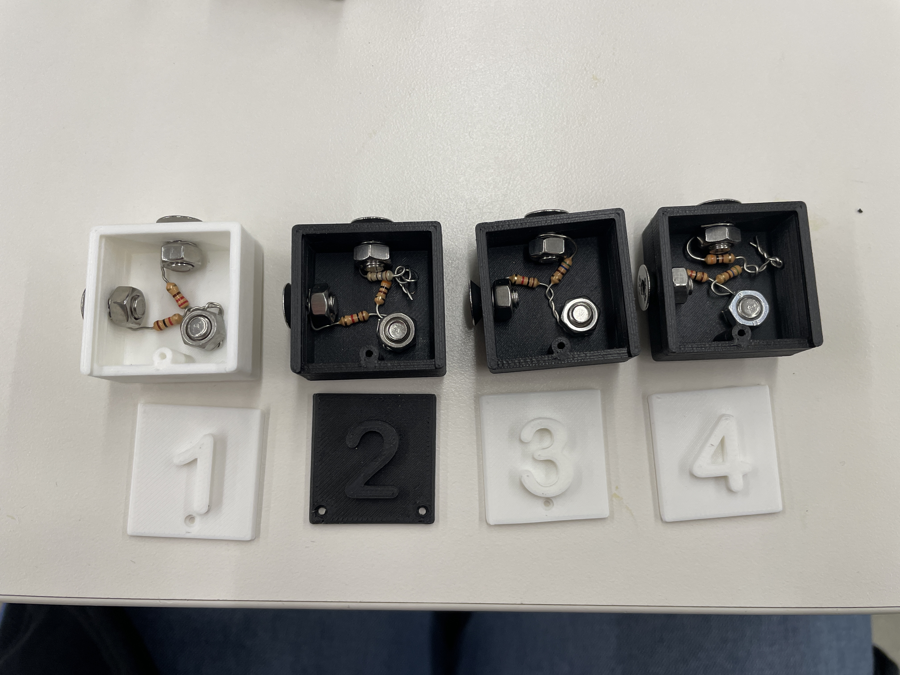
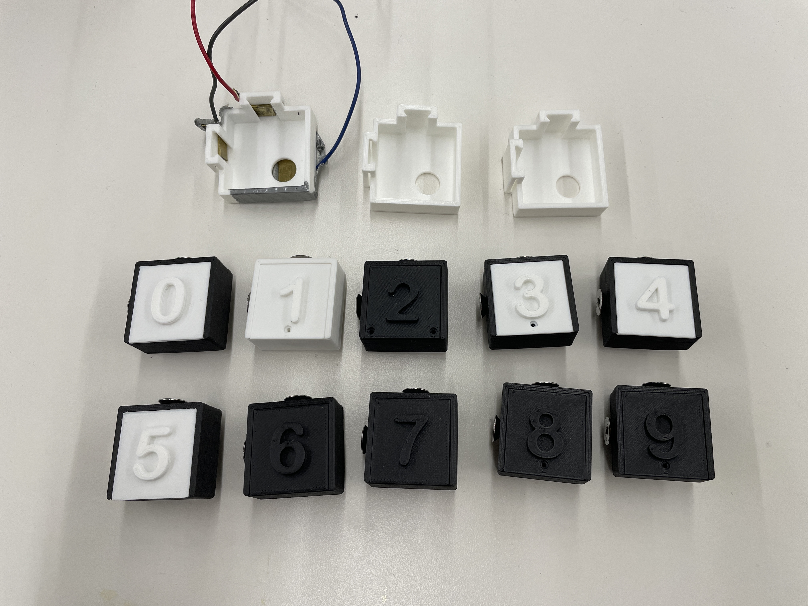
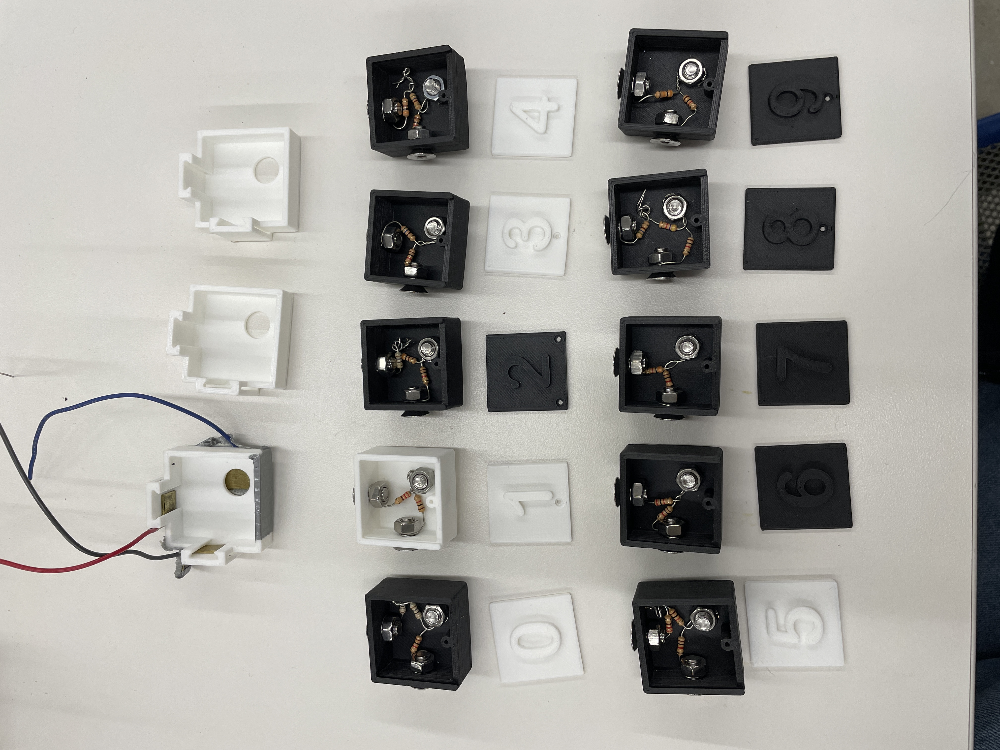
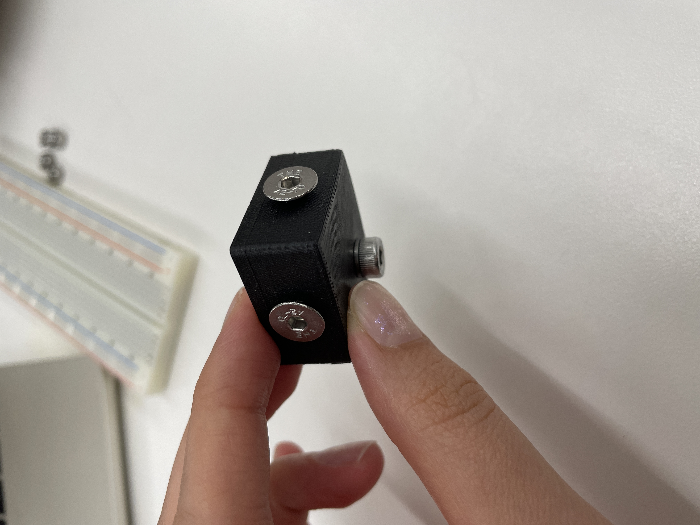

For this assignment, my main goal was to make a new tile slot and tile to fit in the slot that would fit well enough that the arduino could accurately read the voltage divider inside of the tile. The original tile slot that I created would not quite fit the tile pieces when the flat head screws were fully screwed into the number tile, so the first thing that I did was re-design this part to fit better. However, I had not worked on this project in a while, AND I had not done a good job with making the Fusion design easy to change (everything was parameterized but when I would change the parameter values, some parts wouldn't line up anymore and it got super messy), so I ended up fully redoing the outerbox design in Fusion, which of course took a while (although definitely less time than last time). I made the screw tracks on the outerbox a bit wider and less thick to better fit the screws since the screws go deeper into the tile side holes than I had originally anticipated. I also shifted the hole on the bottom of the number tile to the bottom right corner instead of in the middle of the bottom surface to create some more space and make assembly of each tile easier. Once I got these parts printed, I inserted the pieces of metal that I had from my MVP and again used tape to connect wires to the metal. I put the number 1 voltage divider into the new tile box, and tested these out together.

The test actually seemed to work pretty well, as long as the wires kept contact with the pieces of metal. Thus, I decided to print out two more of the outerbox pieces and nine more of the number tiles with lids for the rest of the digits 0-9 (STL files in the tab on the left...). A few of the prints were too wobbly so I had to reprint those ones since the fit of the tile into the tile slot has to be pretty uniform in order for everything to work. After the first round of printing, I assembled the rest of the tiles numbered 1-4 using three flat head screws for each tile (one on the top side surface, one on the left side surface, and one on the bottom surface).

Once the rest of the prints finished, I assembled the rest of the tiles (definitely got better at it as I went, since it was pretty slow-going at the beginning...). However, there weren't enough of the M5 flat head screws in the lab, so I ended up changing all of the bottom screws to M5 socket head screws, which have a slightly smaller head diameter and a slightly larger head depth. I decided that my arms were too weak at the moment to try to saw more pieces of metal for the two other tile slots, so I will do that in the very near future once I mentally prepare myself to kill my arm in a few days. I tested the tiles, though, to see if they would fit in the tile slot, and they did (for the most part--a couple were getting a little stuck but I think I just need to tighten the side screws). When I tested them with the Arduino, it still wasn't perfect and the readings were not always working, but I think this has to do with the taped wire connections and switching the the socket head screws, which changed the height of the tile when it is put into the slot, so I am just waiting for more of the flat head screws to ship here so I can switch them all back to the original configuration. Overall, I think I made some good progress from my MVP now that I have one tile per digit and multiple tile slots (minus the important metal parts) printed and have gotten over that 3D printing time obstacle. The next step will be cutting more metal and making more secure wire connections (and hopefully this will increase the accuracy of the arduino readings).

Weeks 13 & 14: The rest of it...
hehehe
Final Project Code
I combined parts of my code from week 4 (the original happy/sad toast servo motor code) and week 6 (the original voltage divider "sensor" code) and added a few more things to create the code for my final project:
#include <Servo.h>
Servo myservo; // create servo object to control a servo
class Number{
// Member variables
int slotPin;
int slotVal;
float sensorVal;
float lowerBound;
float upperBound;
int interval = 10;
unsigned long prevMillis;
// Constructor
public:
Number(int pin){
slotPin = pin;
pinMode(slotPin, INPUT);
}
int Read(){
if(millis() - prevMillis > interval){
prevMillis = millis();
sensorVal = analogRead(slotPin) * 5.0 / 1023.0; //read output from pin and convert to volts
// create loop where each iteration checks next number range of output values
for(float i=0.0; i<10; i = i + 1.0){
// set boundaries so that each range is 0.5V
lowerBound = i * 0.5;
upperBound = (i+1.0) * 0.5;
// check if output voltage is within this range
if(lowerBound < sensorVal && sensorVal < upperBound){
slotVal = i;
return slotVal;
}
}
}
}
};
class Operator{
// Member variables
int slotPin;
int slotVal;
float sensorVal;
float lowerBound;
float upperBound;
int interval = 10;
unsigned long prevMillis;
// Constructor
public:
Operator(int pin){
slotPin = pin;
pinMode(slotPin, INPUT);
}
bool Read(){
if(millis() - prevMillis > interval){
prevMillis = millis();
sensorVal = analogRead(slotPin) * 5.0 / 1023.0; //read output from pin and convert to volts
// create loop where each iteration checks next number range of output values
for(int i=0; i<10; i = i + 1){
// set boundaries so that each range is 1V
lowerBound = i * 0.5;
upperBound = (i+1.0) * 0.5;
// check if output voltage is within this range
if(lowerBound < sensorVal && sensorVal < upperBound){
slotVal = i;
if(slotVal < 5){
// corresponds to plus sign
return true;
}
else{
// corresponds to minus sign
return false;
}
}
}
}
}
};
Number num1(A0);
Operator op(A1);
Number num2(A2);
Number num3(A3);
int numVal1;
int numVal2;
int numVal3;
bool plusMinus = false;
bool check = false;
int servoPin = 2;
unsigned long lastUpdate;
unsigned long prevMillis;
long interval = 150; // variable for servo speed
long checkInterval = 1000; // variable for time between checking values
void setup() {
Serial.begin(9600);
myservo.attach(servoPin); // attaches the servo on pin 2 to the servo object
}
void loop() {
numVal1 = num1.Read();
Serial.print(numVal1);
plusMinus = op.Read();
if(plusMinus == true){
Serial.print(" + ");
}
else{
Serial.print(" - ");
}
numVal2 = num2.Read();
Serial.print(numVal2);
Serial.print(" = ");
numVal3 = num3.Read();
Serial.println(numVal3);
// check if equation is correct
if(plusMinus == true){
if(numVal1 + numVal2 == numVal3){
check = true;
}
else{
check = false;
}
}
else{
if(numVal1 - numVal2 == numVal3){
check = true;
}
else{
check = false;
}
}
// see if should move servo
if(millis() - prevMillis > checkInterval){
// move servo based on check variable
if(check == true)
{
Serial.println("correct");
moveServo(180);
}
else
{
Serial.println("incorrect");
moveServo(10);
}
}
}
// move servo position
void moveServo(int position) {
if((millis() - lastUpdate) > interval)
{
lastUpdate = millis(); // updates previousMillis to be current time
myservo.write(position); // tell servo to go to position in variable 'pos'
}
}